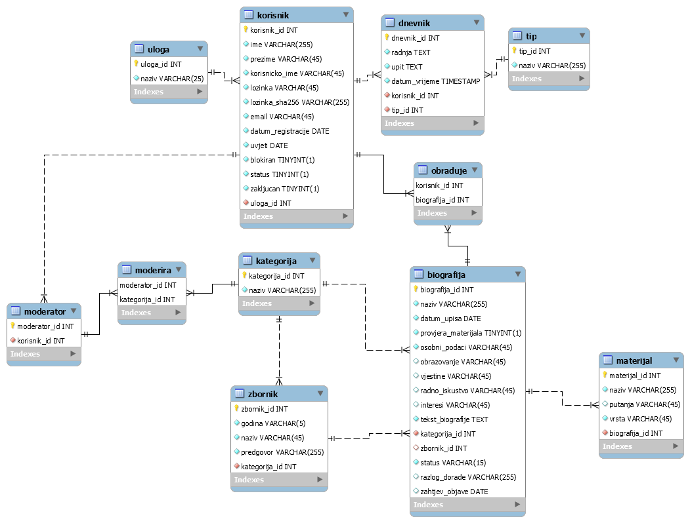

Dokumentacija
Opis projektnog zadatka
Projektni zadatak je napraviti sustav koji omogućuje upravljanje i objavu vlastitih biografija. Uloge su neregistrirani korisnik,
registrirani korisnik, moderator i administrator. Neregistrirani korisnik na početnoj stranici vidi statistiku broja zbornika po kategoriji biografija, kao i popis zbornika grupirano
po biografijama. Odabirom nekog zbornika, vidi biografije korisnika koji su u tom zborniku.
Klikom na RSS ikonu otvara se ispravno oblikovan RSS u XML obliku gdje se vidi zadnjih 10 *potvrđenih* biografija po svakoj kategoriji biografija.
Registrirani korisnik može sve što i neregistrirani, i još kreirati/ažurirati biografije. Pritom unosi potrebne podatke o biografiji. Neka od viših uloga mora prihvatiti ili odbiti
korisnikovu biografiju, a ako je odbijena, korisnik ju ne može ažurirati. Vidi sve svoje biografije, grupirano po godini sa statusom i razlogom dorade, te klikom na biografiju može
jednom godišnje poslati zahtjev za objavom te biografije. Može i postaviti materijale za svoje biografije pri čemu bira vrstu materijala, i vidi galeriju
materijala čije biografije su u zborniku.
Moderator može sve što i neregistrirani i registrirani korisnik. Uz to, može pregledavati/kreirati/ažurirati zbornike za kategorije za koje je zadužen. Prilikom kreiranja
zbornika odabire kategoriju, unosi potrebne podatke i odabire biografije koje pripadaju odabranoj godini. Vidi sve biografije korisnika i može poslati biografije
,za koje su zatražene objave, na doradu pri čemu navodi razlog dorade. Vidi popis svih zahtjeva za objavu biografije te ih potvrđuje/odbija. Posebno su označeni zahtjevi koji imaju doradu.
Oni zahtjevi koji nemaju pridodanog materijala se ne mogu prihvatiti.
Administrator može sve što prijašnje 3 uloge. Uz to, može pregledavati/kreirati/ažurirati kategorije biografija i tim kategorijama dodjeljuje moderatore. Može napraviti
sigurnosnu kopiju svih biografija i materijala iz baze u obliku SQL skripte. Može vratiti podatke iz sigurnosne kopije pri čemu se brišu trenutni podaci u bazi. Prilikom vraćanja
iz kopije, za svaku biografiju se provjerava da li postoje fizičke datoteke materijala koje su postavljene od strane korisnika i ako ne, šalje se zahtjev na e-mail korisniku da se
ponovno postave. Vidi i statistiku korištenja sustava pristupa stranicama, uz mogućnost filtriranja po korisnicima i vremenskom razdoblju.
Opis projektnog rješenja
Projektno rješenje implementira Smarty sustav predložaka kroz cijeli projekt, osim kod stranica autor.html i dokumentacija.html pošto se za njih traži da budu nazvane sa sufiksom
.html.
Neregistrirani korisnik prilikom dolaska na početnu stranicu vidi ono što je gore navedeno, te se može registrirati u sustav. Registracijski dio je implementiran u
cijelosti osim .htaccess ispisa korisnika. Kada se registrira, morat će preko maila potvrditi svoj račun, što će ga automatski prijaviti u sustav i imat će ovlasti registriranog
korisnika.
Registrirani korisnik može činiti sve što je gore opisano, osim filtriranja galerije materijala. Navigacija se prema njegovoj ulogi mijenja na način da mu dopusti
kreiranje i ostalih radnji sa biografijama.
Moderatori mogu pregledavati, kreirati i ažurirati zbornike biografija, i to za kategorije za koje je taj moderator zadužen. Sve ostale gore navedene funkcionalnosti su
također implementirane. Kao i registriranom korisniku, navigacija se prema njegovoj ulogi mijenja na način da mu dopusti sve što može i registrirani korisnik, plus ovlasti moderatora.
Administrator može pregledavati, kreirati i ažurirati kategorije biografija i kategorijama dodjeljivati moderatore, kao i pregledavati sve korisnike sustava i zaključavati,
otključavati, blokirati i odblokirati njihove račune. Ostale funkcionalnosti nisu implementirane.
Shema baze podataka (ERA model)

Popis i opis skripata
1. index.php
Početna stranica. Na njoj se prikazuje "banner" koji obavještava korisnika o tome da korištenjem stranice prihvaća korištenje kolačića. Prikazuje tablice poput popisa zbornika
grupiran po kategorijama, statistiku broja zbornika po kategoriji biografija, biografije prijavljenog korisnika, popis svih biografija i popis zahtjeva za objavu biografije.
2. baza.class.php
Ova skripta je preuzeta sa e-sustava učenja. Služi za spajanje na bazu podataka te rad s bazom (upiti i sl.).
3. sesija.class.php
Ova skripta je također preuzeta. Kreirao ju je profesor Matija Novak, te služi za upravljanje sa sesijama, točnije pri prijavi i odjavi korisnika.
4. galerija.php
Skripta koja iz baze vraća materijale čije biografije su u zborniku.
5. headers.php
Također prezeta skripta sa e-sustava učenja. Služi da omogućuje rad sa klasama sesija i baza, kao i rad sa Smarty sustavom predložaka.
6. popisBiografija.php
Skripta koja nakon klika na neki od zbornika na početnoj stranici vraća biografije i njihove autore u odabranom zborniku.
7. rss.php
Skripta koja otvara ispravno oblikovan RSS u XML obliku gdje se vidi zadnjih 10 *potvrđenih* biografija po svakoj kategoriji biografija.
8. zaboravljenaLozinka.php
Skripta koja stvara random lozinku od 8 znakova, od kojih je prvi veliko slovo, a zadnji broj. Tu random lozinku šalje na mail povezan sa upisanim korisničkim imenom
i ta nova lozinka postaje nova lozinka tog korisničkog računa.
9. upravljanjeRacunima.php
Skripta koja služi administratoru da blokira, odblokira, zaključa ili otključa odabrani korisnički račun. Korisnički račun se bira na skripti koja će biti navedena kasnije.
Prima $_GET['id'] prema kojem zna koji račun blokirati i sl.
10. registracija.php
Skripta koja služi za obrazac registracije. Provjerava da li je ispravno riješen reCaptcha. Ako je sve ispravno napisano, inserta podatke u bazu podataka i stvoren je novi
korisnički račun. Nadalje, šalje mail na upisani e-mail koji sadrži poveznicu na skriptu koja će potvrditi taj korisnički račun. Ta skripta će biti navedena kasnije.
11. racuni.php
Skripta koja služi administratoru da vidi popis svih korisničkih računa u sustavu. Može kliknuti na ID računa kako bi se otvorila skripta pod brojem 9.
12. provjeriNaziv.php
Skripta koja surađuje s JavaScriptom koji provjerava zauzetost naziva biografije prilikom stvaranja.
13. provjeriKorime.php
Skripta koja surađuje s JavaScriptom koji provjerava zauzetost korisničkog imena prilikom registracije.
14. potvrdi_odbij.php
Skripta koja prima ID biografije za koju postoji zahtjev objave. Na skripti se može taj zahtjev prihvatiti ili odbiti, ali prihvatiti se može samo ako ta biografija koja
je odabrana ima povezan neki materijal uz sebe.
15. potvrdaMaila.php
Skripta na koju se šalje korisnika koji u mailu, nakon registracije, klikne na link. Skripta tog korisnika pretvara u potvrđeni korisnički račun i automatski ga prijavljuje.
16. posaljiZahtjev.php
Skripta koja prima ID biografije za koju se želi poslati zahtjev za objavu. Provjerava je li već u zadnjih godinu dana poslan zahtjev, te ako je vraća se u index.php
sa ...?id-jem "kriviZahtjev" pa se korisniku u alert-u ispisuje da je zahtjev već poslan. Ako nije, čini se analogno samo da je zahtjev sada uspješno poslan.
17. popisZbornika.php
Skripta koja prikazuje popis svih zbornika u bazi. Osim toga, sadrži i gumb koji vodi moderatora/administratora na skriptu za kreiranje novog zbornika.
18. noviModerator.php
Skripta koja služi za dodavanje novog moderatora nad nekim kategorijama u bazi.
19. novaKategorija.php
Skripta koja služi za dodavanje nove kategorije u bazu.
20. novaBiografija.php
Skripta koja služi za dodavanje nove biografije u bazu.
21. moderatori.php
Skripta koja dohvaća i prikazuje popis svih moderatora u sustavu i kategorija nad kojim upravljaju.
22. logout.php
Skripta koja služi za odjavu prijavljenog korisnika.
23. login.php
Skripta koja sadrži obrazac za prijavu u sustav. Provjerava da li je ispravno upisano korisničko ime i lozinka, te da li je račun zaključan ili blokiran. Nakon 3 neuspješne prijave,
zaključava račun.
24. kreiranjeZbornika.php
Skripta koja služi za kreiranje novog zbornika u bazu te dodavanja odabranih biografija u taj zbornik.
25. kategorije.php
Skripta koja prikazuje tablicu sa svim kategorijama i gumb koji vodi na skriptu za dodavanje nove kategorije. Klikom na neki od ID-jeva kategorije, ta se kategorija može ažurirati.
26. dorada.php
Skripta prima ID neke biografije koju administrator/moderator želi poslati na doradu. U obrazac se upisuje razlog dorade i skripta to sprema u bazu za tu biografiju.
27. azuriranjeZbornika.php
Skripta prima ID zbornika koji je odabran za ažuriranje. U obrazac se upisuju podaci i skripta sprema promjene u bazu podataka.
28. azuriranjeBiografije.php
Skripta prima ID biografije koja je odabrana za ažuriranje. U obrazac se upisuju podaci i skripta sprema promjene u bazu podataka.
29. azurirajKategoriju.php
Skripta prima ID kategorije koja je odabrana za ažuriranje. U obrazac se upisuje naziv i skripta sprema promjenu u bazu podataka.
30. azurirajBiografiju.php
Skripta prikazuje tablicu biografija koje je korisnik stvorio te klikom na naziv neke od njih se otvara skripta za ažuriranje odabrane biografije.
Datoteke od kojih se sastoji projekt
1. css
Datoteka sadrži primarni .css i .css koji se koristi kao prilagođen dizajn za disleksiju.
2. forms
Datoteka sadrži razne skripte koje najčešće sadrže obrasce ili poveznice na obrasce.
3. javascript
Datoteka sadrži file sa JavaScript kodom te file sa jQuery kodom.
4. media
Datoteka sadrži materijale biografije te slike raznih ikona.
5. smarty
Datoteka sadrži Smarty sustav predložaka preuzet sa e-sustava za učenje.
6. templates
Datoteka sadrži .tpl datoteke koje sadrže html kod za rad sa Smarty sustavom predložaka.
7. templates_c
Datoteka koja sadrži skripte potrebne za rad Smarty sustava predložaka.
Mapa mjesta
Početni folder, css, forms, javascript, media, smarty, templates, templates_c
Popis i opis korištenih tehnologija i alata
Apache NetBeans IDE
Razvojno okruženje u kojem sam pisao sav HTML, CSS, JavaScript i PHP kod.
FileZilla
Aplikacija kojom sam iz foldera projekta ručno brisao neke stare datoteke.
PuTTy
Aplikacija kojom sam se spajao na barku te mijenjao ovlasti pristupa nad folderom projekta.
MySQL Workbench
Aplikacija u kojoj sam radio ERA model baze te kreirao SQL kod baze podataka koji sam kasnije importao u phpmyadmin.
Xampp
Aplikacija kojom sam lokalno kreirao server za lokalan razvoj projekta.
Popis i opis korištenih vanjskih izvora (moduli/biblioteke) i njihovo korištenje u skriptama
1. Smarty
Smarty sustav predložaka koji sam koristio za odvajanje PHP koda od HTML-a. Svaka skripta zapravo prikazuje template headera, body-a i footera.
2. jQuery + DataTables
Koristio sam vanjsku biblioteku koja mi je dozvoljavala korištenje jQuery-a i DataTablesa. U projektu je 6 tablica obrađeno DataTablesom.
Opis završenosti projekta
Procjenjujem postotak završenosti svog projekta na 50.8%.
Prema obrascu za ocjenjivanje, funkcionalnosti koje nisu implementirane:
Registracija
.htaccess ispis korisnika
Prijava
Prijava putem HTTPS-a
Rad sustava
Straničenje podataka (implementirano, ali korištenjem DataTables). Pretraživanje i sortiranje kolona. AJAX (XML, JSON). Pomak vremena. Dnevnik. Prilagođavanje dizajna i ispis
(ispis nije implementiran).
Registrirani korisnik
Filtriranje galerije materijala
Administrator
Konfiguracija sustava. Pregled i pretraživanje dnevnika. Kreiranje sigurnosne kopija. Vraćanje podataka iz kopije. Statistika korištenja sustava. Statistike grafički
prikazi.
Posebne osobine
Korištenje Angular JS. Generiranje PDF dokumenata. SEO links. Zaštita XSS i SQL ubacivanje. Izvještaj testiranja aplikacije.
Popis uočenih problema u radu
Nakon što administrator promijeni naziv kategorije, ili doda novu, ta kategorija se neće uzimati u obzir prilikom npr. stvaranja nove biografije. Postoji 6 kategorija kojima
biografije i zbornici mogu pripadati. Međutim, stvaranje i ažuriranje kategorija radi u potpunosti, kao i stvaranje biografija i ostalog - samo nastaje problem kada se to
dvoje "sudari".
Promjena teme/disleksija je implementirano, no odabir teme se ne sprema u kolačić već se mora kliknuti ikona za pristupačnost.
Prilagođavanje dizajna nisam siguran koliko radi i zašto neki dijelovi ne rade. Uočio sam da tablice nad kojima je DataTables ne odgovaraju ispravno na promjenu veličine ekrana.
Također, stranica nije implementirana za korištenje na npr. mobitelu, jer ne vidim igdje da je to potrebno, no nisam siguran.
Pomoć u korištenju aplikacije je implementirana na barem 3 stranice, no ne na način da posebno opisuje svaki element stranice, već stranicu u cijelosti
kako bi korisniku objasnila čemu stranica na kojoj se nalazi služi i kako ju može koristiti. Ipak mislim da ovo nije problem u radu, no zadatak je malo nejasan.
Prilikom ažuriranja biografije, ako se dio s materijalom ostavi prazno, za tu biografiju će se obrisati da je povezana s nekim materijalom. Postoji poruka koja korisnika na ovo
upozorava. Ovo nije bug, već feature, kako bi se omogućilo brisanje materijala iz biografije.
Ponekad, rijetko, pojavi se Notice o nekom "session lib" problemu. To se javlja samo pri radu na barki i stoga ne znam koji je uzrok.
" Notice: session_start(): ps_files_cleanup_dir: opendir(/var/lib/php/sessions) failed: Permission denied (13)
in /var/www/webdip.barka.foi.hr/2020_projekti/WebDiP2020x092/sesija.class.php on line 41 "